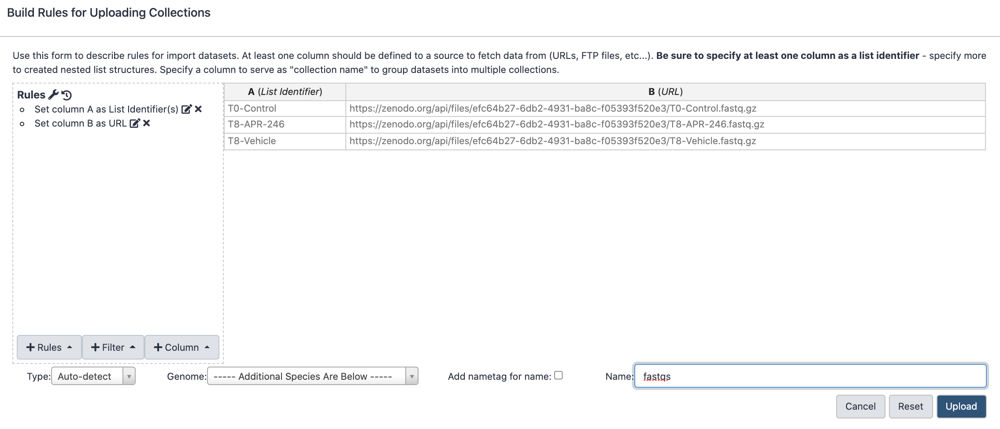
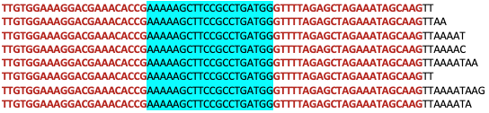
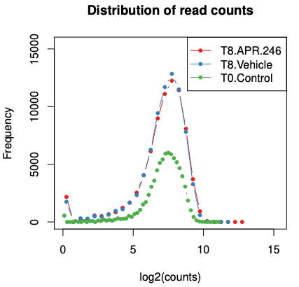
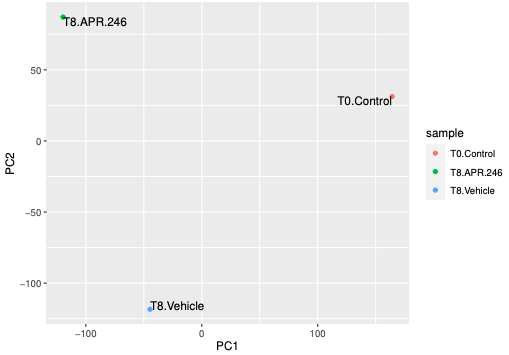
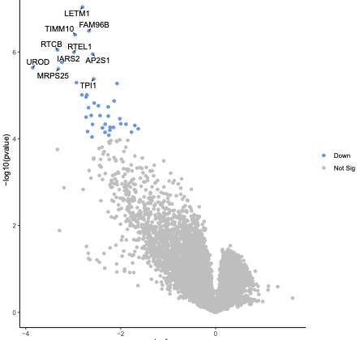

The Clustered Regularly Interspaced Short Palindromic Repeats (CRISPR) system is a bacterial immune system that has been modified for genome engineering. This groundbreaking technology resulted in a Nobel Prize for Emmanuelle Charpentier and Jennifer Doudna in 2020 (Uyhazi and Bennett 2021). CRISPR consists of two components: a guide RNA (gRNA) and a non-specific CRISPR-associated endonuclease (Cas9). The gRNA is a short synthetic RNA composed of a scaffold sequence necessary for Cas9-binding (trRNA) and ~20 nucleotide spacer or targeting sequence which defines the genomic target to be modified (crRNA). Cas9 induces double-stranded breaks (DSB) within the target DNA. The resulting DSB is then repaired by either error-prone Non-Homologous End Joining (NHEJ) pathway or less efficient but high-fidelity Homology Directed Repair (HDR) pathway. The NHEJ pathway is the most active repair mechanism and it leads to small nucleotide insertions or deletions (indels) at the DSB site. This results in in-frame amino acid deletions, insertions or frameshift mutations leading to premature stop codons within the open reading frame (ORF) of the targeted gene. Ideally, the end result is a loss-of-function mutation within the targeted gene; however, the strength of the knockout phenotype for a given mutant cell is ultimately determined by the amount of residual gene function.
The ease of generating gRNAs makes CRISPR one of the most scalable genome editing technologies and it has been recently utilized for genome-wide screens. These screens enable systematic targeting of 1000s of genes, with one gene targeted per cell, to identify genes driving phenotypes, such as cell survival, drug resistance or sensitivity. It is feasible for any laboratory to perform a CRISPR screen (Cluse et al. 2018) and they are being increasingly used to obtain biological insight (Bock et al. 2022, Przybyla and Gilbert 2021). These days, pooled whole-genome knockout, inhibition and activation CRISPR libraries and CRISPR sub-library pools are commonly screened.
Figure 1: CRISPR knockout and activation methods (from Joung et al. 2016)
Here we will demonstrate analysing CRISPR screen using data from Fujihara et al. 2020. There are 3 samples from the human esophageal cancer cell line (OACM5.1): a baseline sample taken at time zero (T0-Control), a sample treated with drug for 8 days (T8-APR-246) and a control sample treated with vehicle for 8 days (T8-Vehicle). The aim is to identify genes whose knockout increases the cancer cells sensitivity to the drug. We will use FASTQ files containing 1% of reads from the original samples to demonstrate the read processing steps.
From Rules menu select Add / Modify Column Definitions
Click Add Definition button and select List Identifier(s): column A
tip Can’t find List Identifier?
Then you’ve chosen to upload as a ‘dataset’ and not a ‘collection’. Close the upload menu, and restart the process, making sure you check Upload data as: Collection(s)
Click Add Definition button and select URL: column B
Click Apply
In the Name: box type fastqs and press Upload

Raw reads QC
First we’ll check the quality of the raw read sequences with FastQC and aggregate the reports from the multiple samples with MultiQC (Ewels et al. 2016). We will check if the base quality is good and for presence of adapters. For more details on quality control and what the other FastQC plots mean see the “Quality control” tutorial.
With CRISPR screens we expect adapter sequence to be present, surrounding the guide. The adapters for the Brunello library vector used with this dataset (lentiGuide-Puro) are shown below. We’ll get FASTQC to check for their presence by providing an adapters file with their sequences.
Figure 2:Reads from the T8-APR-246 sample with one of the guide sequences highlighted in blue (controlguide1 from Brunello library file). The adapter sequences are in red, directly adjacent to the guide on the right and left. The bases in purple at the start of the reads are stagger regions of different length (0-8bp), required to maintain diversity across the flowcell during sequencing of CRISPR screens.
details Adapters file
The adapters file (adapter_list.tsv) we use here with FASTQC was created by adding the two CRISPR adapter sequences (5’ and 3’ of the guide) to the bottom of the adapters file used by FASTQC here. The first 12 bases of the CRISPR adapters were used, as that length is currently recommended in the FASTQC adapters file.
hands_on Hands-on: Quality control
Import the adapters file from Zenodo or the Shared Data library (if available):
Open the Galaxy Upload Manager (galaxy-upload on the top-right of the tool panel)
Select Paste/Fetch Data
Paste the link into the text field
Press Start
Close the window
FastQCTool: toolshed.g2.bx.psu.edu/repos/devteam/fastqc/fastqc/0.73+galaxy0 with the following parameters:
param-collection“Short read data from your current history”: fastqs (click “Dataset collection” button on left-side of this input field)
param-file“Adapter list”: adapter_list.tsv
MultiQCTool: toolshed.g2.bx.psu.edu/repos/iuc/multiqc/multiqc/1.11+galaxy0 with the following parameters to aggregate the FastQC reports:
In “Results”
“Which tool was used generate logs?”: FastQC
In “FastQC output”
“Type of FastQC output?”: Raw data
param-collection“FastQC output”: Raw data files (output of FastQC)
Add a tag (#fastqc-untrimmed) to the MultiQC webpage to make it easy to differentiate this dataset in the History from other MultiQC reports we will generate.
Tip: Adding a tag
Click on the dataset
Click on galaxy-tagsEdit dataset tags
Add a tag starting with #
Tags starting with # will be automatically propagated to the outputs of tools using this dataset.
Check that the tag is appearing below the dataset name
Inspect the webpage output from MultiQC
question Questions
What is the read length?
What do you think of the base quality of the sequences?
Are adapters detected?
solution Solution
The read length is 75 bp.
The base quality is good for the 3 files, as can be seen in the plot below.
Yes. In the Adapter Content plot (below) we can see the two CRISPR adapters have been detected. The adapter 5 prime of the sgRNA starts appearing at the beginning of the reads and has been detected in nearly 100% of reads. The adapter 3 prime of the sgRNA appears after base 40. There’s also a little Illumina Universal adapter detected towards the ends of some reads which indicate the presence of short fragments, possibly adapter dimers.
Trim adapters
We’ll trim the adapters from these sequences using Cutadapt (Marcel 2011). To trim, we’ll use the 5’ adapter sequence. We don’t need to trim the 3’ adapter as Model-based Analysis of Genome-wide CRISPR-Cas9 Knockout (MAGeCK) will only use the first 20bp from each read. It determines the number of bases to use automatically from the length of the sequences in the library file, in our case 20bp, or we can specify the sgRNA length.
details Adapter trimming
In this dataset the adapters start at different positions in the reads, as was shown above. MAGeCK count can trim adapters around the guide sequences. However, the adapters need to start at the same position in each read, requiring the same trimming length, as described on the MAGeCK website here. An example for what MAGeCK expects is shown below. If you used MAGeCK count trimming with the dataset in this tutorial it wouldn’t be able to trim the 5’ adapter properly and you would only get ~60% readsmapping instead of >80%.
Figure 3: Example showing what MAGeCK count expects to be able to auto-detect and trim adapters. Guide sequence is higlighted in blue with the adapter sequences directly adjacent on the right and left. MAGeCK count uses the first 20 bases of each read to map so the sequence after the guide is less important to trim exactly.
For this dataset, as the adapters are not at the same position in each read, we need to trim the adapters before running MAGeCK count.
hands_on Hands-on: Trim adapters
CutadaptTool: toolshed.g2.bx.psu.edu/repos/lparsons/cutadapt/cutadapt/3.5+galaxy0 with the following parameters:
“Single-end or Paired-end reads?”: Single-end
param-collection“FASTQ/A file #1”: all fastq.gz files
MultiQCTool: toolshed.g2.bx.psu.edu/repos/iuc/multiqc/multiqc/1.11+galaxy0 with the following parameters to aggregate the Cutadapt reports:
In “Results”
“Which tool was used generate logs?”: Cutadapt/Trim Galore!
param-collection“Output of Cutadapt”: Report files (output of Cutadapt)
Add a tag (#cutadapt-report) to the MultiQC webpage to differentiate this report from the previous (FastQC) one
Inspect the MultiQC report
MultiQC produces a 5’ trimmed sequences plot where we can check the results are as expected. Here we can see the length of sequence trimmed from the start of the read ranges from 22bp to 30bp with a dip at 27bp. This corresponds to the length of the adapter (22bp) plus stagger sequence (0,1,2,3,4,6,7,8bp) (see sequencing protocol). There is no 5bp stagger sequence so 27bp sequences are not expected to be trimmed. The trimmed sequence lengths are what we expect for this dataset and the plot looks similar for all our samples which is good.
hands_on Exercise: Quality control of the polished datasets
Use FastQCTool: toolshed.g2.bx.psu.edu/repos/devteam/fastqc/fastqc/0.73+galaxy0 and MultiQCTool: toolshed.g2.bx.psu.edu/repos/iuc/multiqc/multiqc/1.11+galaxy0 like before, but using the the trimmed datasets produced by Cutadapt as input.
question Questions
How did read trimming affect the Adapter Content plot?
solution Solution
In the Adapter Content section we now don’t have any 5’ adapter detected. The first 20bp of the reads, what MAGeCK will use for our dataset, has no adapter detected.
Counting
For the rest of the CRISPR screen analysis, counting and testing, we’ll use the tool called MAGeCK (Li et al. 2014, Li et al. 2015).
To count how many guides we have for each gene, we need a library file that tells us which guide sequence belongs to which gene. The guides used here are from the Brunello library (Doench et al. 2016) which contains 77,441 sgRNAs, an average of 4 sgRNAs per gene, and 1000 non-targeting control sgRNAs. The library file must be tab-separated and contain no spaces within the gene or target names. If necessary, there are tools in Galaxy that can format the file removing spaces and converting commas to tabs.
MAGeCK countTool: toolshed.g2.bx.psu.edu/repos/iuc/mageck_count/mageck_count/0.5.9.2.4 with the following parameters:
“Reads Files or Count Table?”: Separate Reads files
param-collection“Sample reads”: the Read 1 Output (outputs of Cutadapt)
param-file“sgRNA library file”: the brunello.tsv file
In “Output Options”:
“Output Count Summary file”: Yes
“Output plots”: Yes
We have been using 1% of reads from the samples. Import the MAGeCK count files (sgRNA counts, counts summary and plots pdf) for the full dataset so you can see what results for a real dataset looks like.
The contents of the count summary file is explained on the MAGeCK website here, also shown below. The columns are as follows. To help you evaluate the quality of the data, recommended values from the MAGeCK authors are shown in bold.
Column
Content
File
The fastq (or the count table) file used.
Label
The label of that fastq file assigned.
Reads
Total number reads in the fastq file. (Recommended: 100~300 times the number of sgRNAs)
Mapped
Total number of reads that can be mapped to library
Percentage
Mapped percentage, calculated as Mapped/Reads(Recommended: at least 60%)
TotalsgRNAs
Total number of sgRNAs in the library
Zerocounts
Total number of missing sgRNAs (sgRNAs that have 0 counts) (Recommended: no more than 1%)
GiniIndex
The Gini Index of the read count distribution. A smaller value indicates more eveness of the count distribution. (Recommended: around 0.1 for plasmid or initial state samples, and around 0.2-0.3 for negative selection samples)
details Gini index
Gini index is a measure of inequality from economics. It is used in CRISPR analysis to assess if sgRNAs are present in equal amounts. In positive selection experiments, where only some sgRNAs dominate, the index can be high. However, as discussed in Li et al. 2015, in plasmid library, in early time points, or negative selection experiments, we expect fairly even
distribution of the remaining sgRNAs that haven’t been negatively selected. A high Gini index in these types of sample can indicate CRISPR oligonucleotide synthesis unevenness, low viral transfection efficiency, and overselection, respectively.
question Questions
Is the data quality good for the 3 samples? Use the count summary file for the full dataset, and the recommended values in the table above, to answer these questions.
Have we sequenced enough reads?
Is the mapped percentage good?
Is the sgRNA zero count value good?
Is the Gini Index good?
solution Solution
The number of reads is ok. For example, for T0 control sample we have 17,272,052 reads mapped to guides. We have 77,441 guides so we have ~220 reads per guide (17,272,052/77,441). A minimum of 100 reads per guide, preferably 300, is recommended.
Yes, in the summary we have >85% mapped for all 3 samples. MAGeCK count does not allow any base mismatches between the reads and the library file, as described here so we expect not all reads will map. Note that we filtered out (6-10%) reads with Cutadapt so we should include those in our unmapped % if we want an accurate count.
T0-Control has 0.71% (546/77441 * 100) sgRNAs that have no reads mapped, which is good. The T8 samples are just slightly high at 2.3% (1752/77441 * 100) and 2.8% (2170/77441 * 100).
The Gini Index is 0.09 for T0-Control (initial state) which is good. The T8 samples are higher at 0.13 and 0.14 but good for a negative selection experiment.
MAGeCK count can also generate a PDF with plots that can help assess quality.
hands_on Hands-on: Assess mageck count plots
Inspect the PDF we imported above.
question Questions
What can you determine about the samples from the plots?
solution Solution
In the boxplots, we can see we have largely similiar distributions of counts for the 3 samples. The greater length of the box and between whiskers in the T8 samples compared to the control tells us we have a bit more variability of counts in those samples, more guides with low and high counts in T8 compared to the T0.
The Distribution of read counts plot shows us how many guides we have for each count (the frequency sums to the total no. of guides 77,441). Similar to the boxplots, the wider distribution for T8 compared to T0 shows us that those samples have more guides with low and high counts. The peak for T0 appears lower just because it has more points (bins) in the plot.

The PCA plot shows us the samples from the different conditions separate well. The T8 samples are a bit more similar to each other, to each other on PC1 axis than to T0. If we had more samples we could use this plot to check for clustering of replicates, batch effect or outliers.

The hierarchical clustering plot also shows us that the T8 samples are a bit more similar to each other than to T0.
The paper by Li et al. 2015 has more information on MAGeCK quality control.
Testing
Now that we’ve generated our guide counts, we’ll use MAGeCK test to identify essential genes. Essential means positively or negatively selected sgRNAs and genes. CRISPR positive or negative selection screens can be performed. With a positive selection screen, most cells die after the treatment (selection) and we are interested in identifying genes whose sgRNAs increase and dominate, indicating loss of those genes helps cells survive that treatment. This can help identify genes essential for drug resistance. With a negative selection screen, most cells survive after the treatment. In that case, we are interested in identifying genes whose sgRNAs decrease (drop out) compared to a control (e.g. vehicle), indicating those genes are needed for the cells to survive with that treatment. This can help identify genes essential for drug sensitivity. Regardless of the type of screen performed (positive or negative), MAGeCK can identify both positively and negatively selected genes in the screen (Li et al. 2014). The dataset we are using in this tutorial is from a negative selection screen where the aim is to identify genes whose knockout increases the cancer cells sensitivity to the drug.
Figure 4: Adapted from Addgene
Two conditions
If we want to compare the drug treatment (T8-APR-246) to the vehicle control (T8-Vehicle) we can use MAGeCK test. MAGeCK test uses a robust ranking aggregation (RRA) algorithm (Li et al. 2014).
Figure 5: Overview of the MAGeCK algorithm. Raw read counts corresponding to single-guided RNAs (sgRNAs) from different experiments are first normalized using median normalization and mean-variance modeling is used to capture the relationship of mean and variance in replicates. The statistical significance of each sgRNA is calculated using the learned mean-variance model. Essential genes (both positively and negatively selected) are then identified by looking for genes whose sgRNAs are ranked consistently higher (by significance) using robust rank aggregation (RRA) (from Li et al. 2014)
hands_on Hands-on: Test for enrichment
MAGeCKs testTool: toolshed.g2.bx.psu.edu/repos/iuc/mageck_test/mageck_test/0.5.9.2.1 with the following parameters:
param-file“Counts file”: kenji_mageck_sgRNA_counts.tsv(the counts file for the full dataset that we imported)
“Specify Treated samples or Control”: Treated samples
“Treated Sample Labels (or Indexes)”: 0
“Control Sample Labels (or Indexes)”: 1
In “Output Options”:
“Output normalized counts file”: Yes
“Output plots”: Yes
details MAGeCK test sample names
For MAGeCK test we could specify the samples using their names, which must match the names used in the columns of the counts file, but the hyphens we have in our sample names aren’t allowed. We could change the hyphens in the counts file or we can specify the samples by their positions in the counts file, with the first sample column being 0. We do that here.
comment Replicates
If we have biological and/or technical replicates we can handle them in a similar way to that described on the MAGeCK website.
For biological replicates, we input them in MAGeCK test Treated Sample Labels/Control Sample Labels fields separated by a comma.
For technical replicates, we could combine the fastqs for each sample/biological replicate, for example with the Concatenate datasets tool, before running MAGeCK count.
details Normalization
We are using MAGeCK’s default normalization method “median” which is more robust to outliers.
Figure M1 from Li et al. 2014 shows a comparison of median (“median”) versus total (“total”) normalization for two CRISPR screen datasets.
The distribution of the read counts of significant sgRNAs (FDR=1%) was compared with the mean read count distribution of all sgRNAs (“all”, black). The distribution of the significant sgRNAs should be similar to the distribution of all sgRNAs if the normalization method is unbiased. The difference is small for the leukemia dataset. However, in the melanoma dataset, where a few sgRNAs have very large read counts, the difference is larger, as “total” normalization will prefer sgRNAs with higher read-counts. In contrast, the distribution after “median” normalization is closer to the distribution of all sgRNAs.
If many genes have zero counts, such as after treatment in a positive selection screen, the median may be zero and we may get a message in the MAGeCK log that we have to use total normalization.
Instead of median or total, we could choose to normalize using control guide sgRNAs. However, we would need to know that they’re not changing due to the experiment or introducing bias (Chen et al. 2018).
MAGeCK test outputs:
a Gene Summary file
a sgRNA Summary file
a PDF report
Gene Summary file
The Gene Summary file contains the columns described below and a row for each gene targeted by sgRNAs. We have >20,000 genes in the file for this dataset.
We get values for both negative and positive selection. The dataset here is from a negative selection screen so we are most interested in the negative values.
Genes are ranked by the p.neg field (by default). If you need a ranking by the p.pos, you can use the Sort data in ascending or descending order tool in Galaxy.
Column name
Content
id
Gene ID
num
The number of targeting sgRNAs for each gene
neg|score
The RRA lo value of this gene in negative selection
neg|p-value
The raw p-value (using permutation) of this gene in negative selection
neg|fdr
The false discovery rate of this gene in negative selection
neg|rank
The ranking of this gene in negative selection
neg|goodsgrna
The number of “good” sgRNAs, i.e., sgRNAs whose ranking is below the alpha cutoff (determined by the –gene-test-fdr-threshold option), in negative selection.
neg|lfc
The log2 fold change of this gene in negative selection. The way to calculate gene lfc is controlled by the –gene-lfc-method option
pos|score
The RRA lo value of this gene in positive selection
pos|p-value
The raw p-value (using permutation) of this gene in positive selection
pos|fdr
The false discovery rate of this gene in positive selection
pos|rank
The ranking of this gene in positive selection
pos|goodsgrna
The number of “good” sgRNAs, i.e., sgRNAs whose ranking is below the alpha cutoff (determined by the –gene-test-fdr-threshold option), in positive selection.
pos|lfc
The log fold change of this gene in positive selection
sgRNA summary file
The sgRNA Summary file contains the columns described below. We can use the sgRNA file to check how the individual guides for genes of interest performed.
Column
Content
sgrna
sgRNA ID
Gene
The targeting gene
control_count
Normalized read counts in control samples
treatment_count
Normalized read counts in treatment samples
control_mean
Median read counts in control samples
treat_mean
Median read counts in treatment samples
LFC
The log2 fold change of sgRNA
control_var
The raw variance in control samples
adj_var
The adjusted variance in control samples
score
The score of this sgRNA
p.low
p-value (lower tail)
p.high
p-value (higher tail)
p.twosided
p-value (two sided)
FDR
false discovery rate
high_in_treatment
Whether the abundance is higher in treatment samples
PDF report
The PDF shows plots of the top 10 negatively and positively selected genes.
We can see the top genes ranked by RRA scores or p value. These values come from the gene summary file.
question Questions
What are the top 3 negatively selected genes by P value?
solution Solution
ESD, MTHFD1L and SHMT2, the same as by RRA score. RRA score is like p-value. Those genes are part of the glutathione pathway which was found to be altered in the published paper for this dataset.
The PDF also shows plots with the sgRNA counts for the top 10 genes. These values are the normalized counts for each sgRNA from the sgRNA summary file. With these plots we can see if the counts of all the sgRNAs for these top genes are changing similarly.
question Questions
Are all the sgRNAs for FLI1 (the 4th top neg gene) changing similarly?
In the gene summary table, how many of the negatively selected genes have FDR < 0.05?
solution Solution
No. We can see in this case that, while one sgRNA is a lot lower in the APR treated sample compared to the vehicle, one increases a little, and the other two sgRNAs don’t change much. So we might conclude that this gene is not strongly negatively selected.
None. One reason for this is likely the large number of genes being tested (>20,000). You could try to increase sensitivity with the procedures described here.
Visualisation
In addition to the visualisations automatically generated by MAGeCK in the PDF, we can create a volcano plot to further visualise the output. With a volcano plot we plot the magnitude of change for drug treatment versus vehicle control (lfc) versus significance (p-value). As we have two columns for lfc and p-value, one for negative selection and one for positive, we first combine these into one column for each using the awk tool. If the neg|p-value is smaller than the pos|p-value the gene is negatively selected. If the neg|p-value is larger than the pos|p-value the gene is positively selected. Then we create the plot using the Volcano plot tool.
hands_on Hands-on: Create volcano plot
Text reformatting with awkTool: toolshed.g2.bx.psu.edu/repos/bgruening/text_processing/tp_awk_tool/1.1.2 with the following parameters:
param-file“File to process”: MAGeCK test Gene Summary
“AWK Program”: Copy and paste the text in the grey box below into this field
# Print new header for first line
NR == 1 { print "gene", "pval", "fdr", "lfc" }
# Only process lines after first
NR > 1 {
# check if neg pval (column 4) is less than pos pval (column 10)
if ($4 < $10){
# if it is, print negative selection values
print $1, $4, $5, $8
} else {
# if it's not, print positive selection values
print $1, $10, $11, $14
}
}
Inspect the file output. It should look like below.
Volcano PlotTool: toolshed.g2.bx.psu.edu/repos/iuc/volcanoplot/volcanoplot/0.0.5 to create a volcano plot
param-file“Specify an input file”: the Text reformatting output file
param-file“File has header?”: Yes
param-select“FDR (adjusted P value)”: Column 3
param-select“P value (raw)”: Column 2
param-select“Log Fold Change”: Column 4
param-select“Labels”: Column 1
param-select“Points to label”: Significant
param-text“Only label top most significant”: 10
Inspect the plot in the PDF output.
question Questions
What is the most significant gene?
solution Solution
ATP5E as it is the gene nearest the top of the plot.
For more details on using the volcano plot tool, see the tutorial here. For how to customise the volcano plot tool output using R, see the tutorial here.
Pathway analysis
We can perform pathway analysis on the results to identify pathways that are changing with the treatment. MAGeCK has a pathway analysis module, however, we will use the tool fgsea as it outputs some visualisations and the genes enriched in the pathway. For fgsea we need a ranked list of genes and a pathways file in GMT format. We can get the ranked list from our mageck results, we’ll use the RRA score column for negative results. For the pathways, we’ll use the Hallmark pathways from MSigDB, which can be a good starting point for pathway exploration as discussed here.
hands_on Hands-on: Perform gene set enrichment with fgsea
Import the Hallmark pathways file Zenodo or the Shared Data library (if available). Set the Type to tabular:
It takes about 30 mins to run mageck mle on the samples below so this part of the tutorial is optional, you can try it if time allows or in your own time.
If we have more than two conditions to compare, or a complex experimental design, we can use MAGeCK mle. MAGeCK mle uses a maximum likelihood estimation (MLE) algorithm (Li et al. 2015). It outputs a single value (beta score) per gene instead of a score for both negative and positive selection. A negative beta score indicates negative selection and a positive indicates positive selection. MAGeCK mle can also be used for comparing 2 conditions instead of MAGeCK test (RRA) but it is slower.
To demonstrate using MAGeCK mle, we will compare the drug treatment (T8-APR-246) to T0 and the vehicle (T8-Vehicle) to T0.
We’ll use a design matrix file as described here.
The rules of the design matrix are:
The design matrix file must include a header line of condition labels
The first column is the sample labels that must match labels in read count file
The second column must be a “baseline” column that sets all values to “1”
The value in the design matrix is either “0” or “1”
You must have at least one sample of “initial state” (e.g., day 0 or plasmid) that has only one “1” in the corresponding row. That only “1” must be in the baseline column
The initial state (baseline) sample must be the 1st sample listed, under the header row, for mageck mle
The file for our samples looks like below. We have 3 conditions: baseline (T0), Vehicle and APR. The 1st row indicates that T0 is our baseline sample, the 2nd row indicates that we want to compare Vehicle to T0, and the 3rd row indicates that we want to compare APR to T0.
MAGeCKs mleTool: toolshed.g2.bx.psu.edu/repos/iuc/mageck_mle/mageck_mle/0.5.9.2.1 with the following parameters:
param-file“Counts file”: the kenji_mageck_sgrna_counts.tsv file
“Design matrix or sample labels”: Design matrix
param-file“Design matrix file”: the mageck_mle_design_matrix file
MAGeCK mle Gene Summary output is described here and below.
Column
Content
Gene
Gene ID
sgRNA
The number of targeting sgRNAs for each gene
Condition_name|beta
The beta score of this gene in condition (e.g. Vehicle or APR). The conditions are specified in the design matrix input to mle.
Condition_name|p-value
The raw p-value (using permutation) of this gene
Condition_name|fdr
The false discovery rate of this gene
Condition_name|z
The z-score associated with Wald test
Condition_name|wald-p-value
The p value using Wald test
Condition_name|wald-fdr
The false discovery rate of the Wald test
Similar to what we did with the MAGeCK test output, we can create a volcano plot to visualise the results, showing the magnitude of change (beta score) and significance (p-value).
hands_on Hands-on: Visualize MLE results
Create a volcano plot to visualise the result for APR vs T0. Use the gene summary file columns GeneAPR|betaAPR|wald-p-valueAPR|wald-fdr
Volcano PlotTool: toolshed.g2.bx.psu.edu/repos/iuc/volcanoplot/volcanoplot/0.0.5 to create a volcano plot
param-file“Specify an input file”: the MAGeCK mle Gene Summary file
param-select“FDR (adjusted P value)”: Column 14
param-select“P value (raw)”: Column 13
param-select“Log Fold Change”: Column 9
param-select“Labels”: Column 1
param-select“Points to label”: Significant
param-text“Only label top most significant”: 10

Similarly, you could create a plot for the vehicle vs T0 using the gene summary file columns GeneVehicle|betaVehicle|wald-p-valueVehicle|wald-fdr
CRISPR Screen reads can be assessed for quality using standard sequencing tools such as FASTQC, MultiQC and trimmed of adapters using Cutadapt. The detection of enriched guides can be performed using MAGeCK. Downstream analysis can include visualisations, such as volcano plot, and pathway analysis with tools like fgsea.
Acknowledgements
Thanks to Mehmet Tekman for suggesting the awk tool. Thanks also to Jennifer Devlin, Lydia Lim and Sylvia Mahara for comments and feedback on the tutorial.
Key points
CRISPR screen data can be analysed using MAGeCK and standard read quality tools
Li, W., H. Xu, T. Xiao, L. Cong, M. I. Love et al., 2014 MAGeCK enables robust identification of essential genes from genome-scale CRISPR/Cas9 knockout screens. 15: 10.1186/s13059-014-0554-4
Li, W., J. Köster, H. Xu, C.-H. Chen, T. Xiao et al., 2015 Quality control, modeling, and visualization of CRISPR screens with MAGeCK-VISPR. 16: 10.1186/s13059-015-0843-6
Doench, J. G., N. Fusi, M. Sullender, M. Hegde, E. W. Vaimberg et al., 2016 Optimized sgRNA design to maximize activity and minimize off-target effects of CRISPR-Cas9. Nature Biotechnology 34: 184–191. 10.1038/nbt.3437
Joung, J., S. Konermann, J. S. Gootenberg, O. O. Abudayyeh, R. J. Platt et al., 2016 Protocol: Genome-scale CRISPR-Cas9 Knockout and Transcriptional Activation Screening. 10.1101/059626
Chen, C.-H., T. Xiao, H. Xu, P. Jiang, C. A. Meyer et al., 2018 Improved design and analysis of CRISPR knockout screens (J. Wren, Ed.). Bioinformatics 34: 4095–4101. 10.1093/bioinformatics/bty450
Cluse, L. A., I. Nikolic, D. Knight, P. B. Madhamshettiwar, J. Luu et al., 2018 A Comprehensive Protocol Resource for Performing Pooled shRNA and CRISPR Screens, pp. 201–227 inMethods in Molecular Biology, Springer New York. 10.1007/978-1-4939-7568-6_17
Fujihara, K. M., B. Zhang, T. D. Jackson, B. Nijiagel, C.-S. Ang et al., 2020 Genome-wide CRISPR screens reveal APR-246 (Eprenetapopt) triggers ferroptosis and inhibits iron-sulfur cluster biogenesis. 10.1101/2020.11.29.398867
Przybyla, L., and L. A. Gilbert, 2021 A new era in functional genomics screens. Nature Reviews Genetics. 10.1038/s41576-021-00409-w
Uyhazi, K. E., and J. Bennett, 2021 A CRISPR view of the 2020 Nobel Prize in Chemistry. Journal of Clinical Investigation 131: 10.1172/jci145214
Bock, C., P. Datlinger, F. Chardon, M. A. Coelho, M. B. Dong et al., 2022 High-content CRISPR screening. Nature Reviews Methods Primers 2: 10.1038/s43586-021-00093-4
Glossary
CRISPR
Clustered Regularly Interspaced Short Palindromic Repeats
MAGeCK
Model-based Analysis of Genome-wide CRISPR-Cas9 Knockout
Feedback
Did you use this material as an instructor? Feel free to give us feedback on how it went.
Did you use this material as a learner or student? Click the form below to leave feedback.
Batut et al., 2018 Community-Driven Data Analysis Training for Biology Cell Systems 10.1016/j.cels.2018.05.012
details BibTeX
@misc{genome-annotation-crispr-screen,
author = "Maria Doyle and Kenji Fujihara and Twishi Gulati",
title = "CRISPR screen analysis (Galaxy Training Materials)",
year = "2022",
month = "03",
day = "09"
url = "\url{https://training.galaxyproject.org/training-material/topics/genome-annotation/tutorials/crispr-screen/tutorial.html}",
note = "[Online; accessed TODAY]"
}
@article{Batut_2018,
doi = {10.1016/j.cels.2018.05.012},
url = {https://doi.org/10.1016%2Fj.cels.2018.05.012},
year = 2018,
month = {jun},
publisher = {Elsevier {BV}},
volume = {6},
number = {6},
pages = {752--758.e1},
author = {B{\'{e}}r{\'{e}}nice Batut and Saskia Hiltemann and Andrea Bagnacani and Dannon Baker and Vivek Bhardwaj and Clemens Blank and Anthony Bretaudeau and Loraine Brillet-Gu{\'{e}}guen and Martin {\v{C}}ech and John Chilton and Dave Clements and Olivia Doppelt-Azeroual and Anika Erxleben and Mallory Ann Freeberg and Simon Gladman and Youri Hoogstrate and Hans-Rudolf Hotz and Torsten Houwaart and Pratik Jagtap and Delphine Larivi{\`{e}}re and Gildas Le Corguill{\'{e}} and Thomas Manke and Fabien Mareuil and Fidel Ram{\'{\i}}rez and Devon Ryan and Florian Christoph Sigloch and Nicola Soranzo and Joachim Wolff and Pavankumar Videm and Markus Wolfien and Aisanjiang Wubuli and Dilmurat Yusuf and James Taylor and Rolf Backofen and Anton Nekrutenko and Björn Grüning},
title = {Community-Driven Data Analysis Training for Biology},
journal = {Cell Systems}
}
Congratulations on successfully completing this tutorial!
 Maria Doyle
Maria Doyle Kenji Fujihara
Kenji Fujihara Twishi Gulati
Twishi Gulati Questions:
Questions: